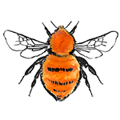
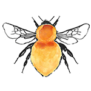
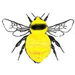

Ginger & Yellow Bumblebees


One of the most common bees you'll see is the Bombus pascuorum. They are foxy coloured and can get very interesting weathered looks as the months go on. You might see these guys in your garden.They can be confused with the rarer B. muscorum but the muscorum has no dark hairs on its distinctive blonde abdomen. Pascuorum has black hairs and these often appear in a banding pattern. The great yellow bumblebee, B. distinguendus is endangered and has a very small range mainly along the western coast in flower rich areas.
| Image | Bumblebee Name | Common Name | Tail | Banding | Queen size | Worker | Male | Status |
|---|---|---|---|---|---|---|---|---|
|  | Bombus pascuorum | Common Carder Bee | Can have black banding pattern on abdomen/tail | Ginger -foxy colour. Can get quite faded | Medium up to 17mm | Same colouring as Queen | Same colouring as Queen | Common |
|  | Bombus muscorum | Large Carder Bee | Blonde | Ginger thorax, blonde abdomen, no black hairs | Medium-large up to 18mm | Same colouring as Queen | Same colouring as Queen | Not Common |
|  | Bombus distinguendus | Great Yellow Bumblebee | Blonde | Bright yellow with black band on thorax | Large up to 20mm | Same colouring as Queen | Same colouring as Queen | Very Rare endangered |